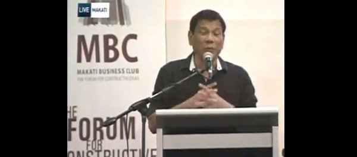
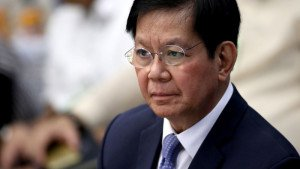
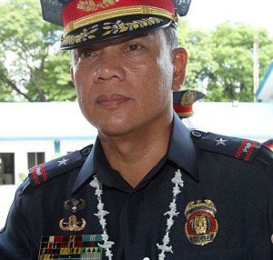

Duterte: Peace and order key to economic growth
by Abner Macolor
PDP standard bearer and presidential race frontrunner Rodrigo
Duterte graced the stage of the 2016 Presidential dialogues at the
Peninsula Manila on Wednesday to present his economic agenda in
front of the Makati Business Club (MBC) and Management
Association of the Philippines (MAP).
Read more

Bills to allow wiretapping of drug
suspects to pass within year –
Lacson
by: Tarra Quismundo
MANILA — Sen. Panfilo Lacson is optimistic that amendments to the
Anti-Wiretapping Law could be passed within the year, expanding
exemptions to the wiretap ban that would allow snooping on drug
suspects in a bid to boost the administration’s war on the
illicit trade.
Read more

PNP, AFP, Muslim leaders vow to
prevent terror in Central Visayas
by: Ador Vincent Mayol
CEBU CITY – In attaining peace, collaboration is key.
With this in mind, Chief Supt. Noli Taliño, director of the Police
Regional Office in Central Visayas (PRO-7), and Major General
Raul del Rosario, commander of the Armed Forces’ Central
Command, met with Muslim leaders in Cebu, on Tuesday,
hoping to strengthen ties.
Read more